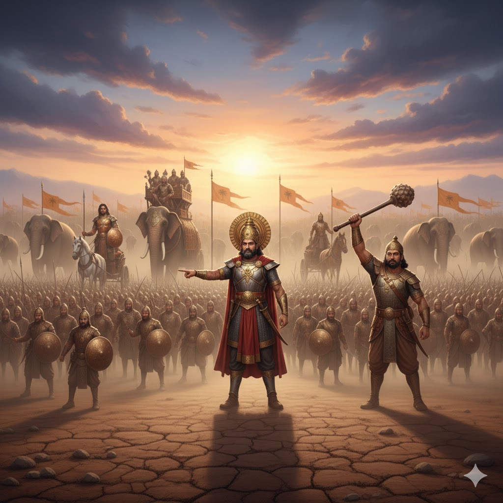

সরল ভাবার্থ
পিতামহ ভীষ্মের দ্বারা সুরক্ষিত আমাদের এই সেনাবাহিনী অজেয় (অসীম), অন্যদিকে ভীমের দ্বারা সুরক্ষিত পাণ্ডবদের সেনাবাহিনী অত্যন্ত সীমিত।
বিস্তারিত ধর্মীয় ব্যাখ্যা
দুর্যোধন এখানে দুই পক্ষের শক্তির তুলনা করছেন। তিনি মনে করছেন যে তাঁর বাহিনী 'অপর্যাপ্তম্' অর্থাৎ এর কোনো সীমা নেই এবং এটি বিজয়ী হবেই কারণ এর নেতৃত্বে আছেন ভীষ্মের মতো অভিজ্ঞ সেনাপতি। অন্যদিকে পাণ্ডবদের বাহিনীকে তিনি 'পর্যাপ্তম্' বা সীমাবদ্ধ বলছেন এবং ভীমকে তাদের রক্ষক হিসেবে উল্লেখ করে কিছুটা অবজ্ঞার সুর প্রকাশ করেছেন। ভীষ্ম ছিলেন প্রবীণ এবং কৌশলী, আর ভীম ছিলেন মূলত পেশীবহুল শক্তির অধিকারী। দুর্যোধন ভাবছিলেন ভীষ্মের বুদ্ধির কাছে ভীম হেরে যাবেন।
ধর্মীয় বিচারে এটি মানুষের 'অন্ধ বিশ্বাসের' প্রতিফলন। দুর্যোধন কেবল বাহ্যিক সংখ্যা ও অভিজ্ঞতার ওপর ভরসা করছেন। তিনি ভুলে গেছেন যে যুদ্ধের ফলাফল কেবল সেনাপতির দক্ষতা দিয়ে নির্ধারিত হয় না, বরং তা নির্ধারিত হয় ধর্মের মাধ্যমে। ভীষ্ম যদিও কৌরবদের সেনাপতি ছিলেন, কিন্তু তাঁর মন সব সময় পাণ্ডবদের মঙ্গল কামনা করত। অন্যদিকে পাণ্ডবদের সৈন্য সংখ্যা কম হলেও তাদের ভেতরে যে ঐক্য এবং ভগবানের প্রতি ভক্তি ছিল, তা কৌরবদের ছিল না। দুর্যোধনের এই দম্ভ আসলে তাঁর পতনের আগাম বার্তা। যারা কেবল নিজের সম্পদ আর লোকবল নিয়ে গর্ব করে, তারা জীবনের মূল সত্যটি হারিয়ে ফেলে। শ্রীমদ্ভগবদ্গীতা আমাদের শেখায় যে, সত্যের জয় সব সময় সংখ্যাধিক্যের ওপর নির্ভর করে না। একটি ছোট প্রদীপ যেমন বিশাল অন্ধকার ঘরকে আলোকিত করতে পারে, তেমনি অল্প কিছু সত্যনিষ্ঠ মানুষ হাজার হাজার অধার্মিককে পরাজিত করতে সক্ষম। দুর্যোধনের এই বিশ্লেষণ তাঁর রাজসিক অহংকারেরই ফল।

[ছবি: দুই বিশাল বাহিনীর মাঝখানে দুর্যোধন আঙ্গুল দিয়ে পিতামহ ভীষ্মের সাদা ধ্বজা এবং পাণ্ডবদের পক্ষে ভীমের গদা উঁচিয়ে থাকা সৈন্যদল দেখাচ্ছেন।]